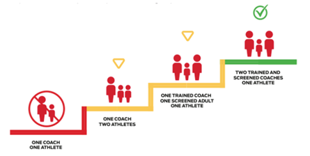

TD Soccer coaches and personnel follow the approach of Canada Soccer Guide to Safety with respect to the protection of children. TD Soccer recognizes the need to provide a safe environment to all participants and understands that all its personnel are in a position to be role models and mentors, and therefore, have a "duty of care" to the children athletes with whom they work.
TD Soccer is committed to creating a safe sporting environment for players and in that respect, adheres to the following principles:
The Coach and Athlete Relationship
Coaches are generally in a position of trust and it requires professional boundaries to build a foundation of trust between coaches and young athletes. The relationship between coaches and young athletes also is characterized by a power imbalance in favour of the coach. Both trust and power can be used to breach the coach-athlete relationship and often this can happen through boundary violations, which happens when the coach places their needs above the needs of the young athlete and gains personally or professionally at the athlete's expense. The responsibility is always with the coach (adult) to establish and keep appropriate boundaries with young athletes.
Therefore, all interactions and activities with young athletes should be (including electronic communication): transparent, accountable, tied to coaching/volunteer duties and in response to meeting the young athlete's needs.
Appropriate Behaviour Examples:
Inappropriate Behaviour Examples:
We all (parents and coaches) play a role. Reporting inappropriate behaviour creates accountability so proper action can be taken and expectations can be re-established. Parents or coaches who have concerns should speak with all coaching members of TD Soccer.
The Rule of Two states that there will always be two certified coaches with an athlete in situations where the athlete is potentially vulnerable. One-on-one interactions between a coach and an athlete, without another individual present, must be avoided in all circumstances except medical emergencies.
TD Soccer follows the Canada Soccer guidelines for the Rule of Two. TD Soccer is committed to protecting young athletes and coaches in potentially vulnerable situations by ensuring that a coach is never alone with an athlete. TD Soccer supports the goal of the Rule of Two, which ensures that all interactions and communications are open, observable and justifiable.
The Standard that TD Soccer follows under the Rule of Two includes:
Rule of Two Implementation Guidelines
a. TD Soccer has taken the Responsible Coaching Movement Pledge.
b. We encourage coaches and volunteers to never be alone and out of sight with a participant without another screened coach or screened adult (parent or volunteer) present.
c. Our practices and games are open to observation.
d. We post our guidelines and policies on our Website to inform parents/guardians and players (particularly in a senior environment) that the club or team is aiming to achieve the highest expectation for the Rule of Two; that is, that two screened and NCCP-trained or certified coaches should always be present with an athlete
e. We share these guidelines with parents/guardians and players and ask them to help identify situations, and acknowledge instances, when the club or team was not following the Rule of Two
f. We require that if a participant rides in a coach's vehicle, another adult should be present (see Guidelines-Travel below).
g. We consider the gender identity of the participant(s) when selecting the screened coaches and volunteers who are present. For teams that only have coaches who do not share the same gender identity of some or all the athletes (i.e., for girls' and womens' teams with male coaches), ask a parent/guardian or other volunteer of the gender identity of the athletes to serve as a regular volunteer or 'bench parent/support' with the team (see Guidelines-Gender Identity below).
h. We ask parents or other individuals who volunteer with the team to participate in the organization's screening process and obtain a criminal record check.
i. We eliminate one-to-one electronic messaging. Ensure that all communications are sent to the group and/or include parents/guardians (see Applying the Rule of Two in a Virtual Setting below).
l. We follow the requirements described in Canada Soccer's Club Licensing Program, which requires all clubs to have:
i. We have a Code of Conduct to Protect Children
ii. We have Guidelines for Appropriate/Inappropriate Conduct between Adults/Adolescents and Children
iii. We have apolicy and procedure that outlines what to do if inappropriate conductis witnessed
Purpose
This policy aims to provide the reporting steps for instances in which TD Soccer coaches or volunteers witness inappropriate conduct.
Reporting procedures below should be followed for the following types of incidents:
Reporting
If a child is believed to have been sexually abused, the obligation is to report the incident to a child welfare agency and/or a law enforcement agency and the child's parents. Failure to report may constitute an offence under the provincial welfare act. Additionally, it may constitute professional misconduct for an individual in a position of trust or an ethical violation for individuals who are registered with professional associations. This duty to report applies even if the information is told in confidence. There is also a responsibility to report internally. Any coach/volunteer who suspects or becomes aware of another coach/volunteer's inappropriate behaviour should follow internal reporting procedures.
Steps for Reporting (from Canadian Centre of Child Protection)
1. Young athlete discloses abuse or abuse is discovered with the adult involved in the abuse being a coach/volunteer.
2. Coach or volunteer who receives disclosure:
3. Head of the organization/manager suspends (or dismisses) coach/volunteer suspected of abuse until case is resolved.
4. Child welfare agency and/or police carry out investigation. Organization should conduct an internal follow up in consultation with police/child welfare and adjusts internal policy if needed.
Potential outcome of Investigation:
5. Document the outcome of the investigation and document the results of internal follow up.
Purpose
This policy aims to provide the reporting steps for instances in which TD Soccer coaches or volunteers have reasonable suspicion to believe that a child may be in need of protection from abuse.
Reporting
The Emergency Protection of Victims of Child Sexual Abuse and Exploitation Act makes it mandatory for every person who has reasonable suspicion to believe that a child (under the age of 18 years) has been or is likely to be subjected to abuse to report the information to a child protection worker or police officer.
Steps for Reporting (from Canadian Centre of Child Protection)
1. Young athlete discloses abuse or abuse is discovered. Document the disclosure.
2. Coach or volunteer who receives disclosure:
3. Child welfare agency and/or police carry out investigation.
4. Document the outcome of the investigation.
Receiving Disclosures of Abuse from a Child
Regardless of the type of abuse a child reports, all disclosures must be treated in a similar manner:
Purpose
This policy aims to:
This policy applies to anyone involved in TD Soccer. This includes coaches, volunteers, athletes, supporters, partners and families. Anyone involved in the futsal through TD Soccer can raise a concern about bullying towards them or another person. We encourage people to speak up for themselves and for other people. If you see it, call it out.
Bullying
It is repeated, unreasonable behaviour directed towards a person or a group of people that can have a significant impact on them. It may create a risk to their physical and/or mental health and safety. The focus is to stop behaviour that is unreasonable and makes people feel bullied. Examples of behaviours that may be bullying in the context of futsal:
Sexual Harassment
Any form of sexual attention or behaviour that is unwanted and offensive to a person. The person who finds sexual behaviour offensive does not have any obligation to tell the person behaving this way that is offensive or to stop, but if someone does say they are finding behaviour unwelcome and offensive, that is a clear sign to stop and make sure it does not happen again.
Sexual harassment can involve a person in a position of authority (coach, volunteer, referee, manager or official) asking a person for sexual activity with a promise or a threat (direct or implied) attached.
Someone who is experiencing unwanted sexual behaviour can find it embarrassing and intimidating, as well as annoying or confusing. They might find it difficult to ask the person to stop or tell them it is offensive. People sometimes will laugh at jokes or smile and say they don't mind, even though the behaviour is unwanted and offensive. These reactions do not mean the behaviour is okay. It will be sexual harassment if the person experiencing it finds it unwelcome and offensive, even if they say nothing at the time.
Racial Harassment
Racial harassment occurs when a person is subjected, for reasons of race, colour, nationality or ethnic origin to behaviour that might reasonably be perceived by the receiver to be offensive or unwelcome.
Racial harassment can include any of the following:
Racist comments, jokes, stereotypes or insults, or abuse because someone is from another culture or religion are never acceptable. People might be feeling uncomfortable or unsafe, even if some people laugh or feel they can't call the behaviour out. It is up to everyone in futsal at TD Soccer to take personal responsibility for stopping this behaviour by calling it out if they see it and also taking it on board if someone calls them on it.
Resolution
Members of the TD Soccer organization (coaches, volunteers, athletes and families) are always encouraged to raise concerns directly with the person who has behaved in a way causing concern but only if that feels safe and likely to be helpful. Otherwise, asking a member of the coaching staff of TD Soccer to help raise the issue and seek a constructive conversation is a good idea.
Both parties involved should have a chance to be heard respectfully and feel safe to be able to say what they want to say, through both informal and formal processes.
If direct resolution isn't appropriate or successful, the issue should be raised with TD Soccer Technical Director, which, in consultation with the people involved, will put in place a culturally appropriate process to try to resolve it. This may include holding a facilitated meeting in a place and following a process that meets the needs of the people involved. Informal processes might not be suitable, for example if the behaviour is violent or threatening, involves someone very senior or people are scared of being punished for raising a concern.